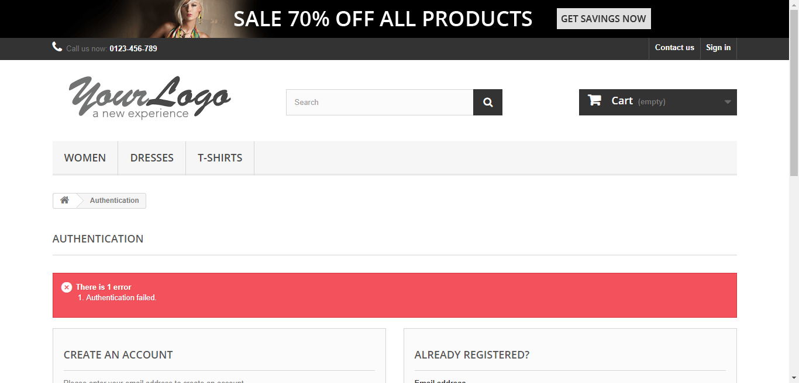

Started
Dec 28, 2021 01:35:49 AM
Ended
Dec 28, 2021 01:38:57 AM
Features Passed
0
Features Failed
1
Features
Scenarios
Steps
Timeline
Tags
| Name | Passed | Failed | Skipped | Others | Passed % |
|---|---|---|---|---|---|
| @smoke | 4 | 2 | 0 | 0 | 66.667% |
System/Environment
| Name | Value |
|---|---|
| version | 8.1 |
| os | Windows |
-
Smoke Tests
1:35:51 AM / 00:03:05:266 Fail
Smoke Tests
12.28.2021 1:35:51 AM 12.28.2021 1:38:56 AM 00:03:05:266 · #test-id=1FailLogin to applicationGiven I click on SignIn button on HomepageWhen I login to application using "iamdeepakbains@gmail.com" and "Selenium1012"Then I am able to Login with the given Usercom.example.dbainsSpring.steps.BaseSteps.closeDriver(io.cucumber.java.Scenario)screenshotPassLogin to applicationGiven I click on SignIn button on HomepageWhen I login to application using "iamdeepakbains@gmail.com" and "Selenium101"Then I am able to Login with the given UserPassOrder TShirt and Verify OrderGiven I press the T-Shirts button in the home page navigation barWhen I place and confirm an order for a new TShirtThen The corresponding Order gets displayed in Order HistoryPassUpdate Personal Information in My AccountPassUpdate Personal Information in My AccountGiven I navigate to MyAccountWhen I update FirstName as "DeepakABCD"Then I verify FirstName has been updated to "DeepakABCD"PassUpdate Personal Information in My AccountGiven I navigate to MyAccountWhen I update FirstName as "DeepakABCD"Then I verify FirstName has been updated to "DeepakABCDE"FailLogin to applicationGiven I click on SignIn button on HomepageWhen I login to application using "iamdeeqpakbains@gmail.com" and "Selenium1012"Step skippedThen I am able to Login with the given UserStep skippedcom.example.dbainsSpring.steps.BaseSteps.closeDriver(io.cucumber.java.Scenario)screenshot
-
@smoke
6 tests
@smoke
4 passed 2 failedStatus Timestamp TestName Fail 01:35:51 AM Login to application Smoke Tests.Login to applicationPass 01:37:07 AM Login to application Smoke Tests.Login to applicationPass 01:37:13 AM Order TShirt and Verify Order Smoke Tests.Order TShirt and Verify OrderPass 01:37:45 AM Update Personal Information in My Account Smoke Tests.Update Personal Information in My AccountPass 01:37:51 AM Update Personal Information in My Account Smoke Tests.Update Personal Information in My AccountFail 01:37:56 AM Login to application Smoke Tests.Login to application
-
org.openqa.selenium.TimeoutException
2 tests
org.openqa.selenium.TimeoutException
2 failedStatus Timestamp TestName Fail 01:36:06 AM Then I am able to Login with the given User Smoke Tests.Login to application.Then I am able to Login with the given UserFail 01:37:56 AM Given I click on SignIn button on Homepage Smoke Tests.Login to application.Given I click on SignIn button on Homepage